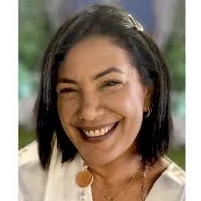

נחל עוז
ערבה דקלה ז"ל
אשת חינוך, מנהלת מערכת החינוך ויועצת חינוכית בגיל הרך
סיפור חיים
דיקלה ערבה ז״ל נולדה בג׳ באלול תשל״ב, 13 באוגוסט 1972, בכפר מימון, בתם של אהובה ורחמים. בשנות התיכון למדה באולפנת נווה דקלים.
חברותיה לכיתה סיפרו עליה שהייתה בחורה אנרגטית ושמחה, שהנוכחות שלה הייתה מורגשת בכל מקום שאליו הגיעה. היא תמיד נראתה מטופחת ומסודרת, אהבה אסתטיקה, והייתה טובה באנגלית. דיקלה האמינה כי רכישת שפה בינלאומית היא דבר חשוב שפותח דלתות.
דיקלה הייתה נכונה תמיד לעזור, האמינה באדם ובתהליך, והכניסה לכל מקום אווירה טובה ורוח שובבית. בני משפחתה סיפרו על המסירות, האחריות והנתינה שהיו בה. היה לה צחוק מתגלגל, חיוך גדול שנראה גם דרך העיניים, ויכולת הקשבה נדירה. היא הייתה אשת שיחה, אישה של לב פתוח ונוכחות מחבקת.
לאחר נישואיה למעיין אליעז, בן קיבוץ נחל עוז, עברה דיקלה להתגורר בקיבוץ, ושם בנתה את חייה. לדיקלה נולדו שלושה ילדים: אודין, סתיו ותומר ז״ל.
דיקלה עסקה בתחום החינוך לאורך כל שנותיה. היא ניהלה את מערכת החינוך בנחל עוז, ובשנים האחרונות הייתה יועצת חינוכית בגיל הרך, יועצת פדגוגית ומדריכת הורים. היא ראתה בחינוך שליחות, והביאה לעבודתה אמונה בילדים, בהורים וביכולת של אנשים לצמוח.
דיקלה הייתה מלאת שמחת חיים. היא אהבה מוזיקה, לרקוד, לשמוח, לחיות בעוצמה ולהפיץ אהבה. היא הייתה אמא לביאה לילדיה - מגוננת, אוהבת, מסורה ונוכחת.
לאחר גירושיה הפכה דיקלה לבת זוגו של נועם אליקים ז״ל, אביהן של דפנה ואלה אליקים. משנת 2015 בנתה עם נועם את ביתה החדש בנחל עוז. השניים התגוררו יחד ותכננו להינשא. ביתם היה בית של משפחה, חום, ילדים, שמחה ונתינה.
שבעה באוקטובר והימים שאחריו בבוקר שבת, שמחת תורה תשפ״ד, 7 באוקטובר 2023, חדרו מחבלים לקיבוץ נחל עוז במסגרת מתקפת הטרור הרצחנית על יישובי עוטף עזה.
מחבלים פרצו לבית משפחת ערבה־אליקים, שבו שהו דיקלה, בן זוגה נועם אליקים, בנה תומר ובנותיו של נועם, דפנה ואלה. במהלך האירועים הקשים נחטפו דיקלה, נועם, דפנה ואלה אל רכב המחבלים.
דיקלה נהרגה במהלך אירוע החטיפה והקרבות בנחל עוז. גם בן זוגה נועם אליקים ז״ל ובנה תומר אליעז־ערבה ז״ל נהרגו באותו יום. דפנה ואלה אליקים נחטפו לרצועת עזה ובהמשך שבו לביתם.
דיקלה ונועם נחשבו נעדרים במשך כמה ימים. דיקלה הובאה למנוחות בא׳ במרחשוון תשפ״ד, יחד עם בנה תומר, ובן זוגה נועם הובא למנוחות יומיים אחריה.
זיכרון ומילים מהלב בני משפחתה וחברותיה של דיקלה זוכרים אותה כאישה של שמחת חיים אמיתית, אהבה, צחוק, תנועה ואור. אישה שהייתה מלאה באנרגיה, שידעה להרים את הסביבה, להקשיב, לחבק ולהכניס תקווה גם ברגעים מורכבים.
אחת מגיסותיה סיפרה שכאשר היא שומעת את השם דיקלה, היא זוכרת לב זהב. עבורה, דיקלה הייתה ״פשוט מלאך״.
דיקלה נזכרת כאשת חינוך מסורה, אם אוהבת, בת זוג, אחות וחברה; אישה שהאמינה באדם, בחינוך, בשמחה ובכוח של קשר אנושי. חיוכה וצחוקה שובי הלב חסרים מאוד לכל מי שהכיר אותה.
זכרה של דיקלה, לצד זכרם של תומר ונועם, נשאר בלב משפחתה, קהילת נחל עוז וכל אוהביה.